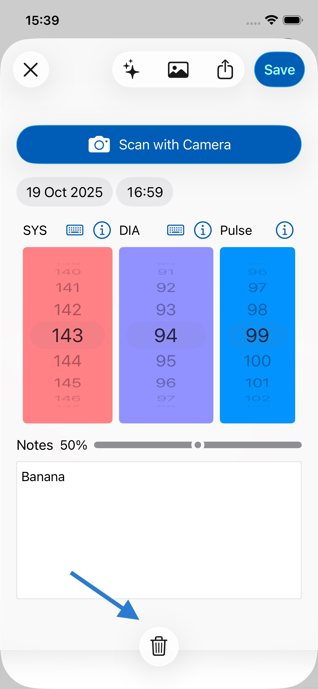
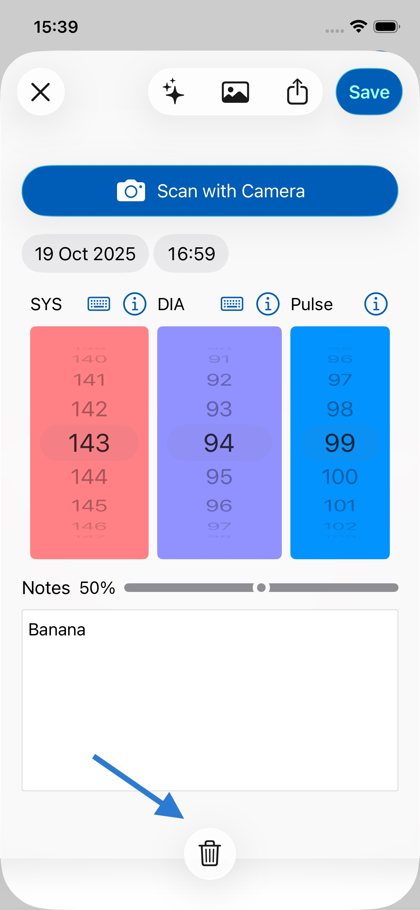
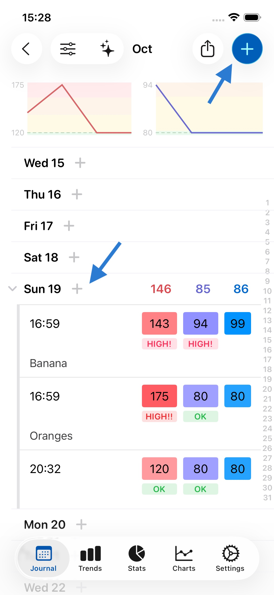
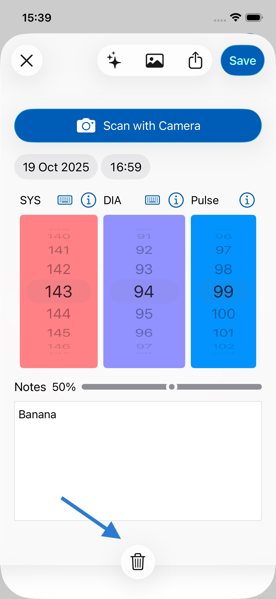

Puede agregar un nuevo registro de dos formas: 1. presionando sobre el día o 2. presionando + en la esquina superior derecha. Ambas opciones se muestran con las flechas en la imagen de abajo.
Sí. Puede agregar muchos registros por día, como se muestra arriba. Solo presione sobre el día nuevamente, o en +, para hacerlo.
Para eliminar un registro, puede deslizar hacia la izquierda sobre el registro y presionar Eliminar, o presionar sobre el registro para abrirlo y presionar el icono de la papelera en la esquina superior izquierda de la pantalla. Ambos métodos se muestran a continuación:

Cuando sus notas contienen 8 o más palabras, aparecerá un emoji encima de ellas para indicar el sentimiento predicho. Esta función puede ayudarle a comprender si su escritura se percibe como demasiado negativa o positiva, o recordarle qué funciona y qué no, sirviendo como guía para su escritura. El sentimiento se calcula completamente en su dispositivo utilizando la API de Lenguaje Natural de Apple, por lo que ningún dato sale de su dispositivo, garantizando total privacidad. Si lo prefiere, puede desactivar esta función en Ajustes, dentro de General.
Cuando presione exportar (como se muestra a continuación), verá una hoja para compartir. En ella, desplácese hacia abajo y presione Imprimir (como se muestra a continuación). Necesitará una impresora inalámbrica compatible con Apple AirPrint para imprimir de forma inalámbrica desde su iPhone o iPad.
Si no tiene una impresora inalámbrica compatible con AirPrint, puede comprar una aquí.

Sí. La app facilita esto. Presione el botón de compartir (como se muestra a continuación), seleccione PDF y luego elija su app de Correo. El informe en PDF se adjuntará a un correo electrónico que podrá enviar a su médico.

Puede ocultar promedios y totales en las opciones de vista, como se muestra a continuación. Esto mostrará solo sus valores ingresados, sin promedios. Esto puede ser útil si le resulta confuso tener los promedios/totales entre sus datos ingresados.

Sí. Siga las instrucciones anteriores, pero seleccione Excel o CSV en lugar de PDF como formato de salida. Luego guarde el archivo en su dispositivo o envíelo por correo electrónico.
El formato Excel es más fiable, mientras que CSV puede ser más ampliamente compatible; ambos deberían abrirse en Excel y software similar, como Apple Numbers o Google Sheets.
Puede enviarlos por correo electrónico a quien desee. Quizás quiera enviarse periódicamente sus datos a sí mismo para guardarlos y hacer copias de seguridad. También puede guardar el archivo PDF o CSV en su dispositivo para usarlo más adelante.
Toque dos veces el icono de Diario en la barra de pestañas en la parte inferior de su pantalla.
Para ver datos de un mes anterior (por ejemplo, datos de septiembre cuando está en octubre):
Sus datos siempre están guardados y accesibles: puede navegar entre meses en cualquier momento para ver sus registros históricos.
Si aún no ve sus datos después de revisar la vista mensual: Vaya a Ajustes > Datos > Gestionar Copias de Seguridad y busque copias de seguridad del mes que intenta ver (o de principios del mes siguiente). Si encuentra una copia de seguridad de ese período, puede restaurarla para recuperar sus datos. Esto puede ayudar si ha reinstalado la app o si hubo un problema de sincronización.
Abra un registro y simplemente toque la hora o la fecha para cambiarla, como se muestra a continuación.

Sus datos están cifrados cuando se almacenan en su dispositivo. Esto significa que incluso si su dispositivo es robado, nadie puede acceder a ellos.
En su dispositivo y en iCloud. Esta app utiliza la misma tecnología que Apple Notas y Fotos para guardar y sincronizar sus datos entre dispositivos, lo que significa que es muy fiable y segura.
No. Los datos solo residen en su dispositivo y en iCloud, que funciona en servidores gestionados por Apple.
iCloud permite que sus datos se respalden y se sincronicen entre sus dispositivos. Así, si pierde su teléfono u obtiene uno nuevo, sus datos pueden restaurarse desde iCloud.
Sus datos deberían sincronizarse automáticamente entre sus dispositivos. Asegúrese de que:

Una sola suscripción eliminará los anuncios en todos los dispositivos. Si ve anuncios en algún dispositivo adicional, vaya a Ajustes > Eliminar Anuncios y presione Restaurar Compra. Asegúrese de que cada dispositivo haya iniciado sesión con la misma cuenta de iCloud.
Las copias de seguridad se realizan automáticamente cada semana de forma predeterminada (aunque puede desactivar esto en Ajustes). También puede crear copias de seguridad manuales en Ajustes > Datos.
No hay límite en el número de copias de seguridad. Las copias de seguridad pueden abarcar años y generalmente ocupan muy poco espacio, por lo que eliminarlas no hará mucha diferencia en el almacenamiento de su dispositivo. Si necesita liberar espacio, es mejor eliminar archivos más pesados como fotos y videos.
Actualmente las copias de seguridad no se sincronizan en iCloud, pero sus datos actuales sí. Esto significa que si obtiene un nuevo iPhone o iPad, sus datos actuales aparecerán allí también, pero no sus copias de seguridad, ya que cada dispositivo mantiene sus propias copias de seguridad locales.
Esto significa que, por ejemplo, si elimina un registro en su iPhone y desaparece de iCloud y de su teléfono, aún podría ir a su iPad y restaurar desde una de sus instantáneas de copia de seguridad más antiguas.
No. Puede usarla de inmediato sin necesidad de iniciar sesión o registrarse. La app utiliza su cuenta de iCloud para sincronizar automáticamente sus datos con cualquier otro dispositivo, usando la infraestructura de Apple. Esto significa que es rápido, fiable y seguro.
Sí, y sus datos se sincronizan automáticamente entre ellos si ha iniciado sesión con la misma cuenta de iCloud. En la versión para iPad tiene más espacio para notas y puede ver más elementos.
Sí. La app está disponible para Macs con Apple Silicon (M1 en adelante). En la app para Mac, puede redimensionar la ventana para ver más datos en pantallas más grandes. Puede descargar la app para Mac aquí en su Mac M1 o posterior.
Nos encantaría escuchar sus comentarios. Escríbanos a feedback@feeltracker.com.
Sí. Vaya a la pestaña Ajustes y desactive el interruptor junto a Activar Efectos de Sonido.
Tendencias le permite identificar qué tiene en mente, por qué y el efecto que está teniendo en usted. Desplácese hacia abajo para más detalles y algunos ejemplos de cómo funciona Tendencias en su app.
Para que Tendencias funcione, necesita tomar notas cuando guarde registros. Puede hacerlo en cualquier registro en el campo de Notas.
Actualmente muestra todos los registros entre 2 fechas y un promedio/total en ese rango. Esto le permite obtener un promedio/total para cualquier período.
Diario es la sección principal de diario/registro que le permite ingresar datos y verlos de forma mensual/anual/de por vida, con promedios y totales.
Tendencias le permite identificar patrones en los datos que está registrando en el Diario para que pueda actuar en consecuencia.
Estadísticas le permite ver sus datos en orden cronológico (el elemento más reciente primero) sin agrupación mensual o anual, y le permite ver promedios y totales entre dos fechas cualesquiera.
No es necesario cerrar sesión en absoluto: el dispositivo descarga automáticamente apps/recursos de la memoria según sea necesario.
Los iPhones y iPads modernos tienen mucha memoria de bajo consumo, por lo que las apps pueden permanecer en la memoria durante mucho tiempo sin efectos adversos. El acceso a esta memoria es seguro y ya está protegido por Face ID, Touch ID o un código de acceso.
Si desea cerrar una app de todos modos (por ejemplo, si no responde), puede seguir las instrucciones de Apple aquí.
Tampoco es necesario iniciar sesión, ya que la app utiliza su cuenta de iCloud para sincronizar/respaldar datos entre sus dispositivos, de forma similar a como lo hacen las apps de Fotos y Notas, sin necesidad de compartir datos personales identificativos.
Sí. Tan pronto como presione el botón lateral del dispositivo para bloquearlo como lo hace normalmente, nadie puede acceder a su app o datos mientras esté bloqueado.
Queremos que primero pruebe la app y vea si le resulta útil, sin distracciones; puede hacerlo gratis, sin ver anuncios de Google. Después de guardar 7 registros, puede ver algunos anuncios de Google, que ayudan a mantener la app y a que siga siendo gratuita.
¡Sí! Para hacerlo, presione el botón ❎ en el banner. Esto le mostrará la opción de suscribirse por una tarifa nominal. Mientras esté suscrito, no verá ningún anuncio.
Le entendemos. Estos anuncios nativos personalizados están diseñados para integrarse con el resto de la app y verse bien, sin ser molestos o invasivos. Queremos que pueda disfrutar usando la app, incluso si no puede pagar. ¡No olvide contarles a sus amigos!
Una pequeña tarifa de suscripción regular hace que la app sea más fácil de probar sin un gran costo inicial. A largo plazo, los ingresos por suscripción nos ayudan a mantener la app y financian el desarrollo de nuevas funciones útiles.
Dependemos de buenas reseñas para hacer crecer la app y seguir desarrollando nuevas funciones. Por favor, deje una reseña siguiendo el enlace de su app:
Gracias por probar la app. Hágame saber si hay algo que pueda mejorar en gs@feeltracker.com e intentaré ayudarle. A menudo, las correcciones y mejoras basadas en los comentarios de los usuarios se envían en una actualización de la app el mismo día o al día siguiente.
Si aún no está satisfecho, puede cancelar su suscripción aquí.
No, la app no se conecta directamente a monitores de presión arterial por Bluetooth. En su lugar, nos hemos enfocado en hacer que la entrada manual sea sencilla mediante tecnología de escaneo con cámara IA. Simplemente apunte la cámara de su iPhone a la pantalla de su monitor después de tomar una lectura, y la app lee automáticamente los números. Esto funciona con prácticamente cualquier monitor de presión arterial que tenga pantalla digital, independientemente de la marca o modelo. No se requiere emparejamiento, no hay que preocuparse por compatibilidad de dispositivos específicos, y solo toma unos segundos. Esta función es siempre gratuita e ilimitada.
Después de tomar su lectura de presión arterial, abra la app y toque el botón "+", luego seleccione "Escanear con Cámara". Sostenga su teléfono firme a unos 15-30 cm de la pantalla de su monitor, asegurándose de que los números sean claramente visibles y estén bien iluminados. La app leerá automáticamente los valores de sistólica, diastólica y pulso. Para mejores resultados, asegúrese de tener buena iluminación y mantenga su teléfono firme mientras escanea. Esto funciona con la mayoría de monitores digitales, incluyendo marcas como OMRON, Microlife y Beurer.
Esto generalmente es causado por la configuración de sincronización con Apple Health. El problema más común es tener solo permisos de escritura habilitados para Apple Health, pero no permisos de lectura. Para solucionarlo: Vaya a Ajustes > Datos > Apple Health y asegúrese de que AMBOS permisos de lectura Y escritura estén habilitados para Presión Arterial y Frecuencia Cardíaca, no solo escritura. La app necesita permiso de lectura para verificar si una lectura ya existe antes de importar desde Health.
Próximamente llegará una función de etiquetas en los próximos meses que le permitirá registrar lecturas para varias personas en un solo dispositivo. Podrá etiquetar cada entrada con el nombre de una persona y luego generar informes individuales para cada miembro de la familia.
Primero, asegúrese de haber iniciado sesión con la misma cuenta de iCloud en ambos dispositivos. Vaya a Ajustes > [Su Nombre] y verifique el ID de Apple. Segundo, verifique que iCloud Drive esté habilitado en ambos dispositivos (Ajustes > [Su Nombre] > iCloud > iCloud Drive). Sus datos se sincronizan automáticamente a través de iCloud, pero requiere conexión a internet y puede tardar unos minutos. Intente abrir la app en cada dispositivo y deslizar hacia abajo para actualizar.
Todas las funciones principales de seguimiento son completamente gratuitas: entradas ilimitadas, escaneo con cámara IA (siempre gratuito), todos los gráficos y tendencias, sincronización con Apple Health y exportación a PDF/CSV. La suscripción agrega: eliminación de anuncios para una experiencia limpia, chat de IA mejorado (100 usos por día vs 10 gratuitos) y acceso a funciones avanzadas de IA. Todas las futuras funciones premium estarán incluidas para los suscriptores.
La PAM (Presión Arterial Media) representa la presión promedio en sus arterias durante un ciclo cardíaco. Se calcula automáticamente para cada lectura. La PAM es particularmente importante para pacientes con DAVI (Dispositivo de Asistencia Ventricular Izquierda) y otros con condiciones cardiovasculares específicas. Para habilitar la visualización de la PAM, vaya a Ajustes > Presión Arterial > Mostrar Presión Arterial Media (PAM). Los rangos personalizables de PAM llegarán en la versión 2.8.x.
Al ingresar una nota (como "Lectura matutina - antes de la medicación"), toque el botón "Plantilla" en la parte inferior izquierda del campo de notas y guárdela como plantilla. La próxima vez que ingrese una lectura, toque "Plantilla" nuevamente y seleccione de sus plantillas guardadas: el texto se inserta al instante. Esto es ideal para notas recurrentes como "Mañana - antes de medicación" o "Noche - después de cenar".
Su presión arterial normalmente debería estar entre 90-140 para el valor sistólico y 60-90 para el valor diastólico. Si está fuera de este rango, debería consultar a un médico.
Según el NHS, la presión arterial ideal está entre 90/60 mmHg y 120/80 mmHg. Sin embargo, esto puede variar dependiendo del sexo, la edad y otras variables. Por lo tanto, es mejor consultar a su médico local para una evaluación precisa de su presión arterial basada en sus circunstancias individuales.
La presión arterial se mide usando un monitor digital de presión arterial. Aquí puede encontrar monitores de presión arterial que funcionan muy bien con la función de Escaneo con Cámara IA. La app puede leer automáticamente los valores de la mayoría de monitores digitales, incluyendo marcas como OMRON, Microlife y Beurer.
Con Tendencias, esta app toma sus datos y notas y muestra qué cosas le afectan y cómo. Por ejemplo, podría ver que meditó 20 veces el año pasado y que la meditación reduce su presión arterial. Por el contrario, podría ver que cada vez que se reúne con Roberto, discuten, y él eleva su presión arterial. Cuanto más use las notas, más útil puede ser Tendencias.
Por ejemplo, usted corre 10 veces. 5 veces su presión arterial baja 10 puntos, y las otras veces baja 5. Tendencias mostrará que, en promedio, correr ayuda a reducir su presión arterial en unos 7.5 puntos.
Con Tendencias, esta app toma sus datos y notas y muestra qué cosas le afectan y cómo. Por ejemplo, podría ver que se reunió con María 20 veces el año pasado y que, en promedio, María le hace muy feliz. Por el contrario, podría ver que cada vez que se reúne con Roberto, discuten, y él le hace infeliz. Cuanto más use las notas, más útil puede ser Tendencias.
Por ejemplo, se reúne con María 10 veces. 5 veces ella le hizo muy feliz (+2), y 5 veces le hizo bastante feliz (+1). Tendencias mostrará que, en promedio, María le hace bastante (+1.5) feliz.
Con Tendencias, esta app toma sus datos y notas y muestra qué palabras están más en su mente. Por ejemplo, podría ver que usó una palabra 20 veces el año pasado. Por el contrario, podría ver que usó otra palabra 50 veces, mucho más a menudo. Cuanto más use las notas, más útil puede ser Tendencias.
Por ejemplo, escribe sobre María 120 veces en sus notas, más que sobre su trabajo, del cual escribe 50 veces. Tendencias en este caso muestra que claramente lo principal en su mente era María.
Con Tendencias, esta app toma sus datos y notas y muestra qué cosas le afectan y cómo. Por ejemplo, podría ver que bebió mucho café la semana pasada y que por eso durmió menos. Por el contrario, podría ver que cada vez que come ensalada o va al gimnasio, duerme mejor. Cuanto más use las notas, más útil puede ser Tendencias.
Por ejemplo, bebe café 10 veces. 5 de esas veces durmió 2 horas menos, y las otras 5 veces durmió 1 hora menos. Tendencias mostrará que, en promedio, beber café le hace dormir 1.5 horas menos.
Con Tendencias, esta app toma sus datos y notas y muestra qué cosas le afectan y cómo. Por ejemplo, podría ver que comió comida rápida 20 veces el año pasado y que, con el tiempo, aumenta de peso cuando come comida rápida. Por el contrario, podría ver que cada vez que come ensalada o va al gimnasio, pierde peso. Cuanto más use las notas, más útil puede ser Tendencias.
Por ejemplo, come donas 10 veces. 5 veces su peso sube 0.1 kg. Las otras 5 veces su peso sube 0.3 kg. Tendencias mostrará que, en promedio, comer donas hace que su peso suba 0.2 kg.
La grasa corporal se reporta mediante básculas especialmente diseñadas que miden la composición corporal, además del peso. Aquí hay un ejemplo de una báscula de este tipo, de Omron. También habrá otras opciones disponibles de otras marcas; lo que debe buscar es "Composición Corporal" además de báscula de peso.
Tenga en cuenta también que, incluso si solo ingresa el peso, aún verá un valor de IMC (a la izquierda del peso, con código de color), que le dará una indicación general de si tiene un peso saludable (donde verde es bueno y rojo es sobrepeso).
Si tiene alguna pregunta o sugerencia, no dude en contactarnos en support@feeltracker.com.